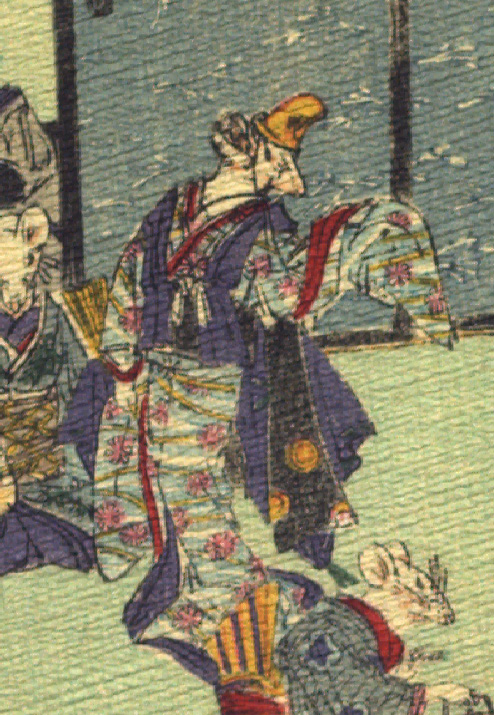

舞う女の鼠。黄色の烏帽子をかぶり、花柄の入った水色の着物と藍色の袖なし羽織を身にまとっている。右手に扇子を持ち、左袖をあげ、身を捻って踊っている。
著作者：J.Dautremer／出典：親書誌：U426_nichibunken_0111：Le mariage de la souris／日付：2006／資源識別子：U426_nichibunken_0111_0009_0004
Copyright (c)2010- International Research Center for Japanese Studies, Kyoto, Japan. All rights reserved.